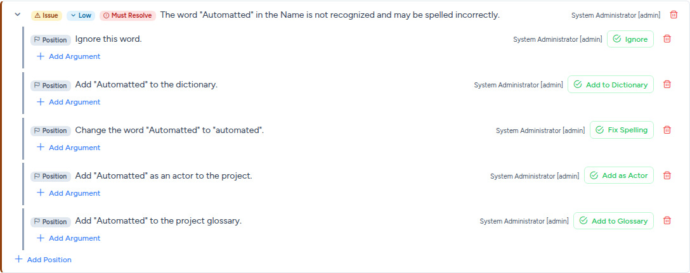
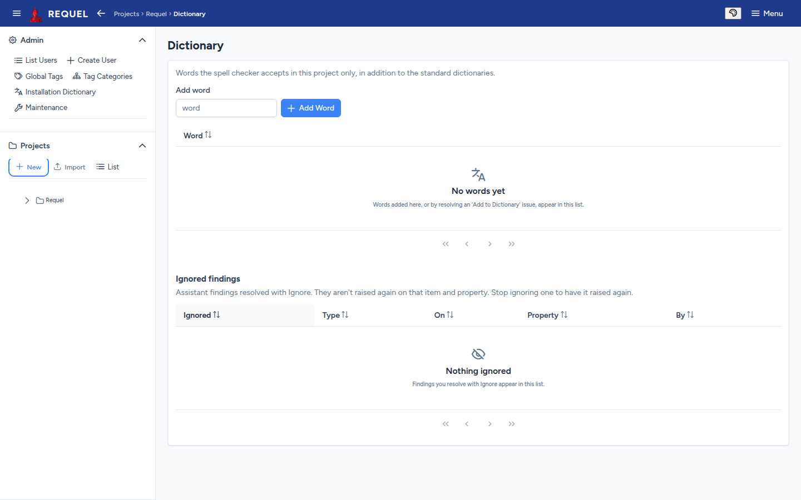
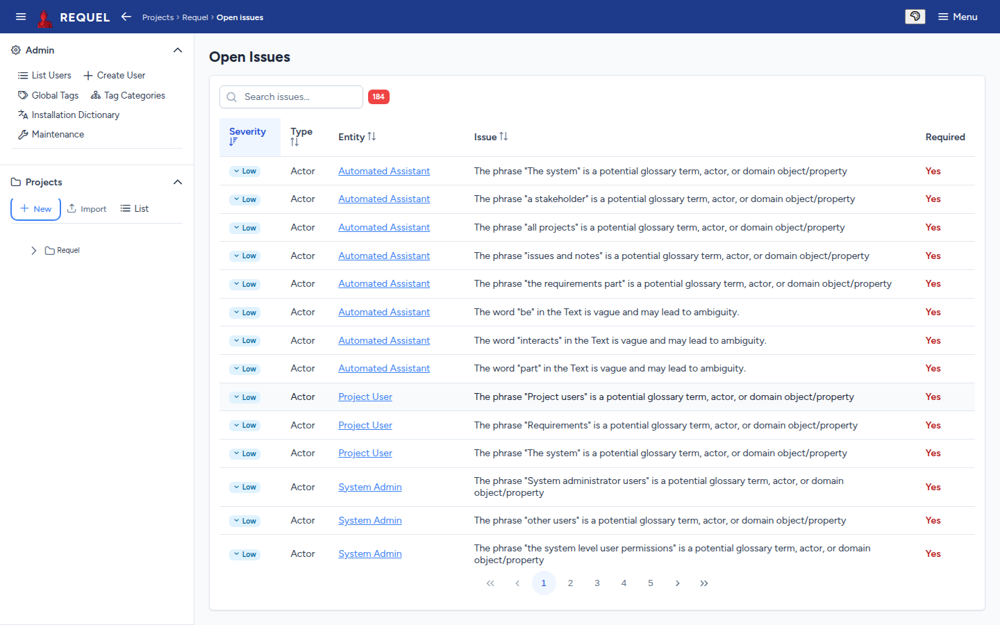

Issues and discussion
Notes and issues on any requirement, how a discussion reaches a decision, and the checks that raise issues for you.
Notes and issues
Every requirement has an Annotations section at the bottom of its editor.
- Add Note leaves a comment.
- Add Issue raises a problem that needs a decision. Give it a severity (low, medium or high) and tick Must be resolved if the requirement isn’t finished until it is.
An issue’s badges show its state (open or resolved), its severity and Must Resolve. Also on lists the other items an issue concerns, when it is about more than one. Collapse all folds the issues to one line each.
Positions, arguments and resolving
An issue is discussed in the IBIS style: possible answers, and the case for and against each.
- Position
- One way to resolve the issue. Anyone may add one with Add Position.
- Argument
- A reason for or against a position: Add Argument, with a support level from strongly for to strongly against.
When the discussion has settled, press the button on the winning position (Resolve on one someone wrote). The issue is resolved by it, and shows its Resolution and who chose it.

Issues from the assistants come with positions that also do something when chosen:
| Button | What happens |
|---|---|
| Fix Spelling | Corrects the word in every item the issue is on. |
| Add to Dictionary | Adds the word to the project’s dictionary, so it isn’t flagged again. |
| Add to Glossary | Creates a glossary term for the phrase. |
| Add as Actor | Creates an actor with that name. |
| Ignore | Closes the issue and stops that finding being raised again on this item. |
The built-in checks
When you save a requirement, Requel’s assistants read its text in the background and raise issues; the page refreshes when they finish. They also leave notes recording how they parsed each sentence.
| Check | Raises an issue when |
|---|---|
| Vague words | A word such as easy or flexible can be read more than one way. |
| Spelling | A word isn’t in the dictionaries. |
| Complex sentences | A sentence is complex enough to be hard to understand. |
| Glossary candidates | A noun phrase looks like a term, actor or domain object that should be defined. |
Each project turns these on or off under Assistants on its overview. Switching one off stops it in that project; the issues it already raised stay. Re-run analysis checks every requirement again.
An issue an assistant raised against text that has since changed, or that a later run no longer reports, is marked May no longer apply. Hide stale hides those; resolve them, or re-run the analysis.
Dictionaries and ignored findings
A project’s Dictionary page lists the words its spell check accepts in addition to the standard dictionaries. Add words here, or by choosing Add to Dictionary on an issue. Administrators keep words for every project in the Installation Dictionary.
Below it, Ignored findings lists the findings resolved with Ignore. Stop ignoring one to have it raised again.

Open issues
Open Issues (in the sidebar tree, or from the overview) lists every unresolved issue in the project, with its severity, the kind of item and the item it is on, and whether it must be resolved. Search it, sort it, and click an item to go and resolve it.
